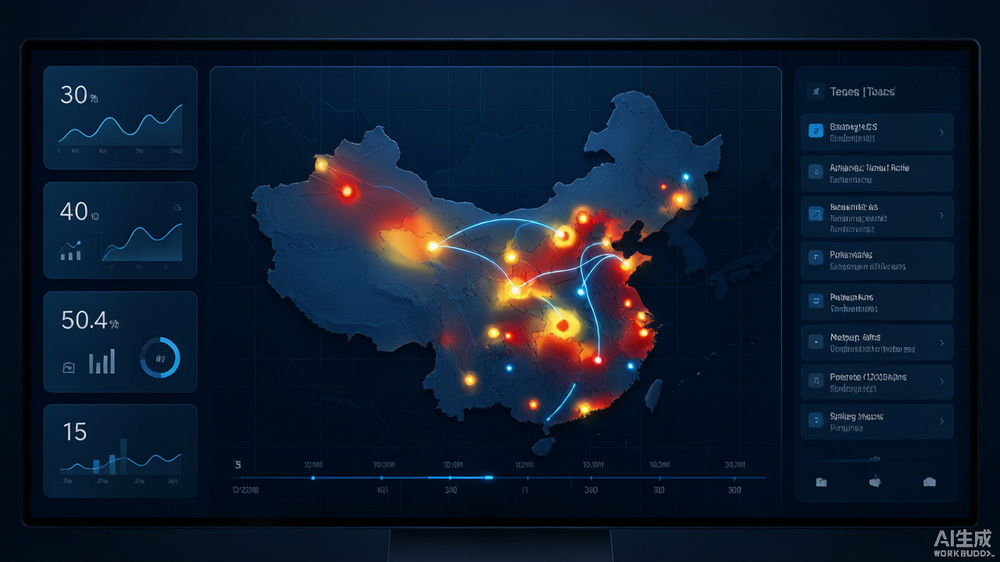
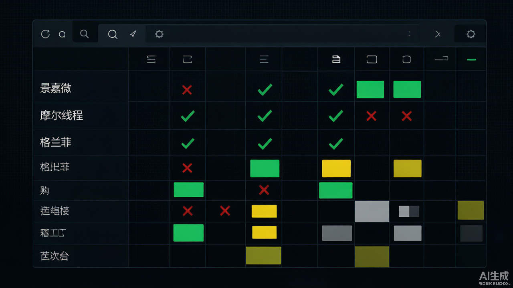

不是效果图，是真实跑在浏览器里的三维场景。下面三个 Demo 可直接预览，点"全屏查看"可独立打开。
看懂这段，能少走 90% 的弯路：Demo 跑不起来，多半不是 Demo 的问题，是环境没对齐。
⚠ 老驱动 + 国产显卡组合下出现花屏 / 卡顿 / 黑屏 / 裂块，正是我们「GPU 故障修复」要解决的典型场景。
弱网 / 无 WebGL 环境也能看效果。以下为静态样例，可交互版见上方实时 Demo 或预约获取。


注：截图与录屏为效果示意样例，用于直观展示；受篇幅限制，非全部图层与交互。可交互版本支持鼠标拖拽旋转、缩放、图层开关。
下方为可交互实时版（需支持 WebGL 的浏览器 + 联网）。iframe 已做懒加载，不占用首屏。